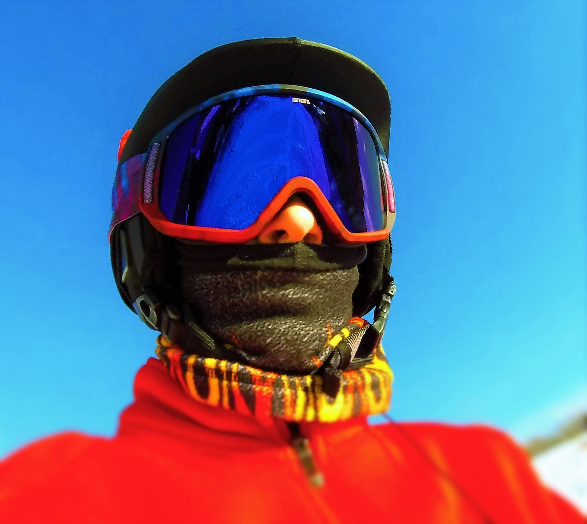

Skiing, shotgun shooting, climbing, Bouldering, kayaking & white water rafting.
The sports that I like to do are skiing, shotgun shooting, climbing, bouldering, kayaking and white water rafting. I love these activities the most when my friends, family, scout troop or church group are with me. I love to ski double black diamonds in the West, Vermont and basically anywhere else. I like to do my shotgun shooting with my dad and 4-H group. I have a 28 gauge over and under, Caesar Guerini. I like to go climbing with friends and my scout troop. I'm not very good at it, but I'm getting better. Also, I like to do free climbing, which is bouldering. I love to go kayaking at any time I can with my friends or scout troop. I can do Class III rapids at the most with a kayak right now. I like to do white water rafting in Class III-V rapids; it's an awesome experience.
1st Picture: Me at Stowe, Vermont. I'm wearing these brands: Anon goggles, a Spyder jacket, Rossignol boots and Vokol skis.
2nd Picture: Me and other scouts from a different troop, White Water Rafting at Summit Scout Camp.


Content for New div Tag Goes Here
Footer Banner Section
©2016 - Light Theme - Edited by scott - 2016 -